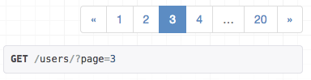
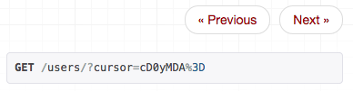

Django REST framework 3.1¶
The 3.1 release is an intermediate step in the Kickstarter project releases, and includes a range of new functionality.
Some highlights include:
- A super-smart cursor pagination scheme.
- An improved pagination API, supporting header or in-body pagination styles.
- Pagination controls rendering in the browsable API.
- Better support for API versioning.
- Built-in internationalization support.
- Support for Django 1.8's
HStoreFieldandArrayField.
Pagination¶
The pagination API has been improved, making it both easier to use, and more powerful.
A guide to the headline features follows. For full details, see the pagination documentation.
Note that as a result of this work a number of settings keys and generic view attributes are now moved to pending deprecation. Controlling pagination styles is now largely handled by overriding a pagination class and modifying its configuration attributes.
- The
PAGINATE_BYsettings key will continue to work but is now pending deprecation. The more obviously namedPAGE_SIZEsettings key should now be used instead. - The
PAGINATE_BY_PARAM,MAX_PAGINATE_BYsettings keys will continue to work but are now pending deprecation, in favor of setting configuration attributes on the configured pagination class. - The
paginate_by,page_query_param,paginate_by_paramandmax_paginate_bygeneric view attributes will continue to work but are now pending deprecation, in favor of setting configuration attributes on the configured pagination class. - The
pagination_serializer_classview attribute andDEFAULT_PAGINATION_SERIALIZER_CLASSsettings key are no longer valid. The pagination API does not use serializers to determine the output format, and you'll need to instead override theget_paginated_responsemethod on a pagination class in order to specify how the output format is controlled.
New pagination schemes.¶
Until now, there has only been a single built-in pagination style in REST framework. We now have page, limit/offset and cursor based schemes included by default.
The cursor based pagination scheme is particularly smart, and is a better approach for clients iterating through large or frequently changing result sets. The scheme supports paging against non-unique indexes, by using both cursor and limit/offset information. It also allows for both forward and reverse cursor pagination. Much credit goes to David Cramer for this blog post on the subject.
Pagination controls in the browsable API.¶
Paginated results now include controls that render directly in the browsable API. If you're using the page or limit/offset style, then you'll see a page based control displayed in the browsable API:

The cursor based pagination renders a more simple style of control:

Support for header-based pagination.¶
The pagination API was previously only able to alter the pagination style in the body of the response. The API now supports being able to write pagination information in response headers, making it possible to use pagination schemes that use the Link or Content-Range headers.
For more information, see the custom pagination styles documentation.
Versioning¶
We've made it easier to build versioned APIs. Built-in schemes for versioning include both URL based and Accept header based variations.
When using a URL based scheme, hyperlinked serializers will resolve relationships to the same API version as used on the incoming request.
For example, when using NamespaceVersioning, and the following hyperlinked serializer:
class AccountsSerializer(serializer.HyperlinkedModelSerializer):
class Meta:
model = Accounts
fields = ['account_name', 'users']
The output representation would match the version used on the incoming request. Like so:
GET http://example.org/v2/accounts/10 # Version 'v2'
{
"account_name": "europa",
"users": [
"http://example.org/v2/users/12", # Version 'v2'
"http://example.org/v2/users/54",
"http://example.org/v2/users/87"
]
}
Internationalization¶
REST framework now includes a built-in set of translations, and supports internationalized error responses. This allows you to either change the default language, or to allow clients to specify the language via the Accept-Language header.
You can change the default language by using the standard Django LANGUAGE_CODE setting:
LANGUAGE_CODE = "es-es"
You can turn on per-request language requests by adding LocalMiddleware to your MIDDLEWARE_CLASSES setting:
MIDDLEWARE_CLASSES = [
...
'django.middleware.locale.LocaleMiddleware'
]
When per-request internationalization is enabled, client requests will respect the Accept-Language header where possible. For example, let's make a request for an unsupported media type:
Request
GET /api/users HTTP/1.1
Accept: application/xml
Accept-Language: es-es
Host: example.org
Response
HTTP/1.0 406 NOT ACCEPTABLE
{
"detail": "No se ha podido satisfacer la solicitud de cabecera de Accept."
}
Note that the structure of the error responses is still the same. We still have a detail key in the response. If needed you can modify this behavior too, by using a custom exception handler.
We include built-in translations both for standard exception cases, and for serializer validation errors.
The full list of supported languages can be found on our Transifex project page.
If you only wish to support a subset of the supported languages, use Django's standard LANGUAGES setting:
LANGUAGES = [
('de', _('German')),
('en', _('English')),
]
For more details, see the internationalization documentation.
Many thanks to Craig Blaszczyk for helping push this through.
New field types¶
Django 1.8's new ArrayField, HStoreField and UUIDField are now all fully supported.
This work also means that we now have both serializers.DictField(), and serializers.ListField() types, allowing you to express and validate a wider set of representations.
If you're building a new 1.8 project, then you should probably consider using UUIDField as the primary keys for all your models. This style will work automatically with hyperlinked serializers, returning URLs in the following style:
http://example.org/api/purchases/9b1a433f-e90d-4948-848b-300fdc26365d
ModelSerializer API¶
The serializer redesign in 3.0 did not include any public API for modifying how ModelSerializer classes automatically generate a set of fields from a given mode class. We've now re-introduced an API for this, allowing you to create new ModelSerializer base classes that behave differently, such as using a different default style for relationships.
For more information, see the documentation on customizing field mappings for ModelSerializer classes.
Moving packages out of core¶
We've now moved a number of packages out of the core of REST framework, and into separately installable packages. If you're currently using these you don't need to worry, you simply need to pip install the new packages, and change any import paths.
We're making this change in order to help distribute the maintenance workload, and keep better focus of the core essentials of the framework.
The change also means we can be more flexible with which external packages we recommend. For example, the excellently maintained Django OAuth toolkit has now been promoted as our recommended option for integrating OAuth support.
The following packages are now moved out of core and should be separately installed:
- OAuth - djangorestframework-oauth
- XML - djangorestframework-xml
- YAML - djangorestframework-yaml
- JSONP - djangorestframework-jsonp
It's worth reiterating that this change in policy shouldn't mean any work in your codebase other than adding a new requirement and modifying some import paths. For example to install XML rendering, you would now do:
pip install djangorestframework-xml
And modify your settings, like so:
REST_FRAMEWORK = {
'DEFAULT_RENDERER_CLASSES': [
'rest_framework.renderers.JSONRenderer',
'rest_framework.renderers.BrowsableAPIRenderer',
'rest_framework_xml.renderers.XMLRenderer'
]
}
Thanks go to the latest member of our maintenance team, José Padilla, for handling this work and taking on ownership of these packages.
Deprecations¶
The request.DATA, request.FILES and request.QUERY_PARAMS attributes move from pending deprecation, to deprecated. Use request.data and request.query_params instead, as discussed in the 3.0 release notes.
The ModelSerializer Meta options for write_only_fields, view_name and lookup_field are also moved from pending deprecation, to deprecated. Use extra_kwargs instead, as discussed in the 3.0 release notes.
All these attributes and options will still work in 3.1, but their usage will raise a warning. They will be fully removed in 3.2.
What's next?¶
The next focus will be on HTML renderings of API output and will include:
- HTML form rendering of serializers.
- Filtering controls built-in to the browsable API.
- An alternative admin-style interface.
This will either be made as a single 3.2 release, or split across two separate releases, with the HTML forms and filter controls coming in 3.2, and the admin-style interface coming in a 3.3 release.